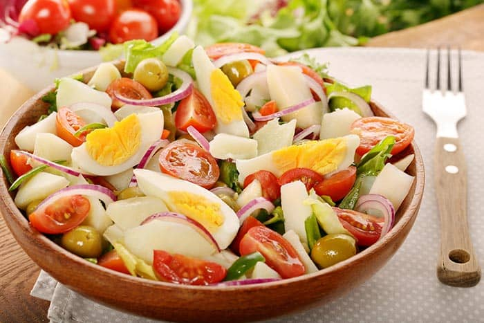

Fecha publicacion 26-08-2019
Ensalada campera, sin duda una de las ensaladas estrella del verano. Y es que llegó el calor y en esta época ya
sólo apetecen cosas frescas y rápidas, como esta ensalada o la ensalada de lentejas que os propusimos tiempo atrás.
Además la ensalada campera es un plato muy completo al igual que una ensalada de pasta, ya que lleva los hidratos de
las patatas, las proteínas del huevo y el atún y las vitaminas de las verduras y hortalizas, por lo que puede servirse
como plato único.
preparacion muy milanesas de pollo; 25 grs. de manteca; 1 cucharada colmada de harina; 125 cc de leche; 1 atado de espinaca; queso rallado en hebras; sal, pimienta y nuez moscada. Preparación 1. Lave bien las espinacas, cocinelas al vapor o solo con el agua que les haya quedado del lavado. Escurra y reserve. 2. Prepare una salsa blanca: derrita la manteca en una ollita o sartén, retire del fuego y coloque la harina y la leche. Vuelva a poner sobre el fuego y revuelva con batidor de alambre. No debe quedar ni muy chirle ni muy espesa. Condimente con sal, pimienta y nuez moscada. Mezcle con la salsa blanca en la procesadora. 3. Fria las milanesas o cocinelas al horno. Pongalas en una asadera o fuente que pueda ir al horno previamente aceitada y distribuya encima la crema de espinaca y el queso rallado. Meta al horno hasta que se gratine.